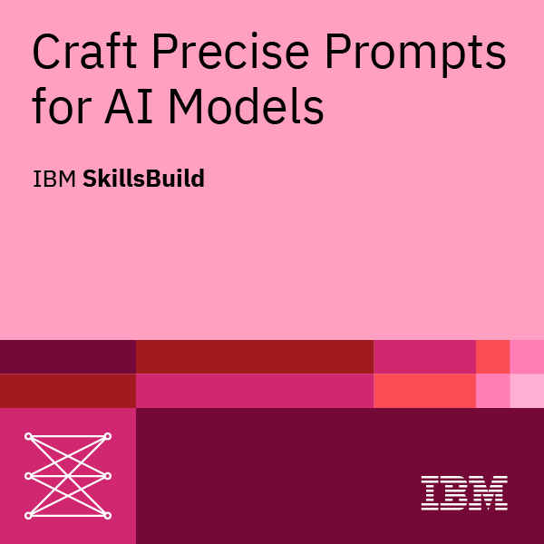

Über mich
Hallo, ich bin 16 Jahre alt und im ersten Lehrjahr als Informatiker EFZ bei Swisscom, wo ich gerade das Programmieren von Grund auf lerne.
Meine Begeisterung für Technik reicht aber viel weiter zurück: Schon vor der Lehre habe ich unzählige Stunden am Computer getüftelt. Bei eigenen Vibe-Coding-Projekten und an Hackathons habe ich viel gelernt, vor allem dass man nie ausgelernt hat. Zum Glück, denn genau das macht es so spannend. Besonders in der KI-Welt, die sich gefühlt jede Woche neu erfindet, bleibe ich bewusst am Ball.
Offline findet man mich beim Wandern, im Leichtathletiktraining oder im Theater. Ausserdem spiele Ich gern Klavier.
Skills
HTML

CSS
JavaScript

GitLab

Tech Support

AI Prompting

Github